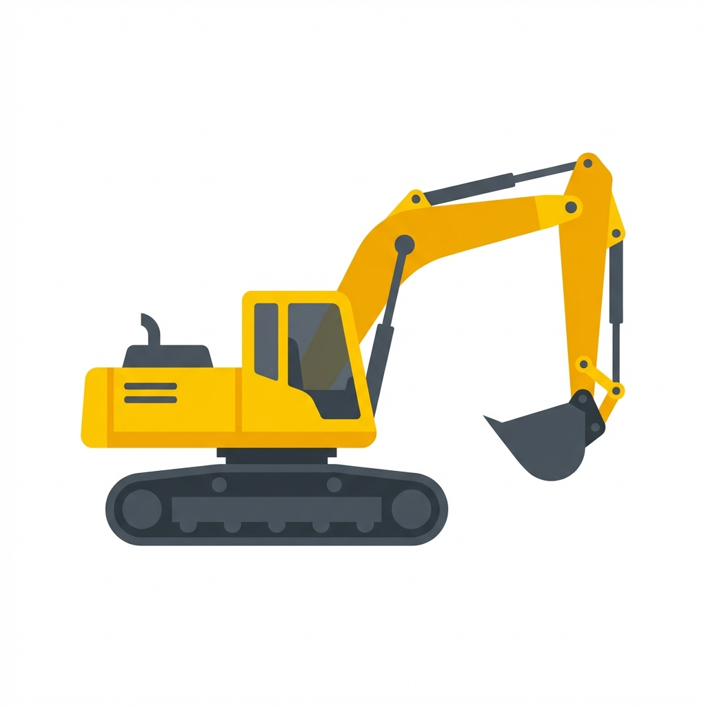
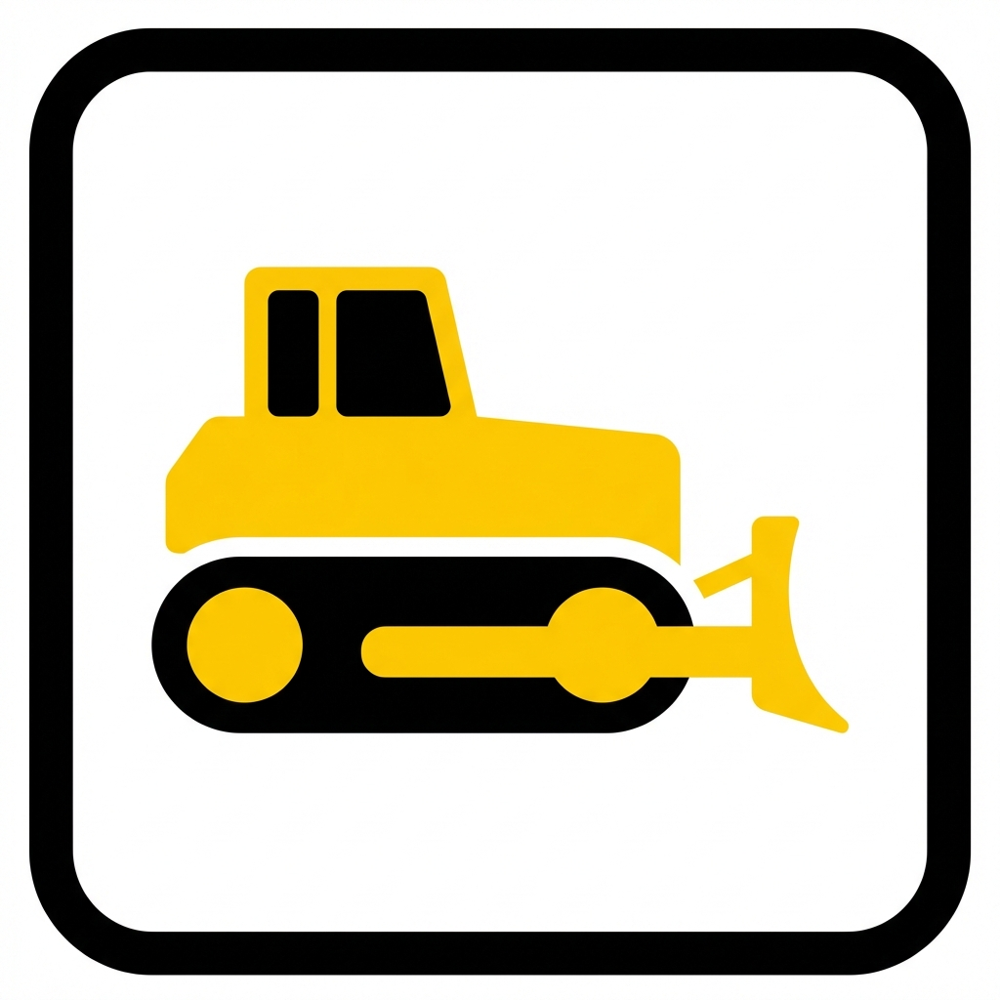
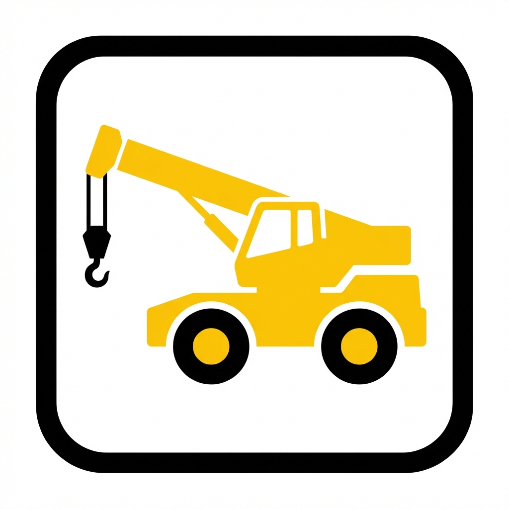

点検する機械を選択
月次点検（車両系）

ショベル系
(バックホウ)

トラクタ系
(ブルドーザ、トラクタ等)

移動式クレーン
日常始業点検
※ショベル系は月次点検を作成すると自動で作成されます
大型土のう
電動工具
発電機
分電盤
水中ポンプ
アーク溶接機
電気設備・機器
玉掛け用具
敷鉄板
保安点検
地山掘削・土止め
移動式クレーン(始業)
株式会社山内組 点検表
< 一覧へ戻る
機種変更
車両系建設機械 定期自主検査表(月例)
点検年月
機械名
型式
*
会社管理No.
*
※会社管理No.を選択すると機械名・型式が自動表示されます
現場管理No.
*
運転時間 (Hr)
*
検査年月日
現場代理人
安全管理者
点検者(正)
点検者(副)
レ
良好
A
調整
△
修理
X
取替
L
給油水
C
清掃
○
良好
×
不良
●
処置済
v2026.02.11-Ver70_SizeFix